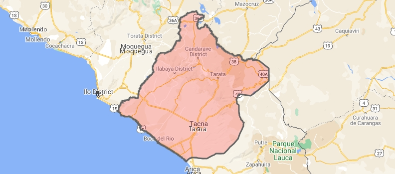

HISTORIA
Tacna es una ciudad peruana, capital de la provincia y del departamento homónimos en el extremo Sur del país. Su área urbana se extiende por cinco distritos conurbados que albergan una población de 325 159 habitantes según estimación y proyección del INEI para 2020.
Está ubicada a orillas del río Caplina, en un reducido valle en medio del desierto costero peruano.
La ciudad de Tacna fue fundada oficialmente el 25 de junio de 1855 durante la época republicana peruana, pero las bases de la ciudad datan desde la colonia, cuando se constituyó en reducción indígena. La ciudad de Tacna fue declarada Ciudad Heroica por el Congreso de la República del Perú el 21 de mayo de 1821 por sus servicios distinguidos a la causa de la Independencia. Fue también la capital de iure de la República Sud-Peruana (1836-1839), y la sede del gobierno de la Confederación Perú-Boliviana.
Después de la Guerra del Pacífico fue ocupada y administrada por Chile, debido al Tratado de Ancón, creándose así la provincia chilena de Tacna, junto con el departamento y comuna homónimas. El territorio de Tarata, administrado como departamento y comuna, fue devuelto el 1 de septiembre de 1925 y el resto en el 28 de agosto de 1929 debido al Tratado de Lima.
Desde la década del 40 del siglo xx, la ciudad ha experimentado un fuerte crecimiento demográfico acompañado de un constante ingreso migratorio, principalmente altiplánico. Este crecimiento demográfico originó la creación de 3 distritos urbanos (Alto de la Alianza, Ciudad Nueva, Coronel Gregorio Albarracín Lanchipa) y la absorción de parte del distrito de Pocollay al área urbana tacneña. Estos 4 distritos mencionados, junto al distrito de Tacna, conforman la ciudad homónima.
ESCUDO DEL DEPARTAMENTO

MAPA DEL DEPARTAMENTO
GOBERNADOR REGIONAL
(Juan Tonconi Quispe)

BIOGRAFIA
Tiene estudios en Ingeniería Económica en la Universidad Nacional del Altiplano y una Maestría en Economía del Medio Ambiente y Recursos Naturales en la Universidad de Los Andes - Colombia. Laboró como planificador en el 2018 en el Gobierno Regional de Puno. Fue catedrático en Universidad Privada de Tacna (2013-2015) y Universidad Latinoamericana CIMA (2016) ; y en el 2016 fue docente postgrado de la Universidad José Carlos Mariategui.
Es Fundador - Presidente de Acción por La Unidad Tacna desde 2017. En las elecciones regionales de 2018 participó por Acción por La Unidad Tacna donde obtuvo en primera vuelta el 16.90% de los votos, disputó una segunda vuelta con el candidato Luis Torres Robledo de Movimiento Independiente Regional Tacna. En la segunda vuelta fue elegido gobernador regional de Tacna.
-
PROVINCIAS Y DISTRITOS:
- TACNA
- Alto del Alianza
- Calana
- Ciudad Nueva
- Coronel Gregorio
- Inclán
- La Yarada
- Pachía
- Palca
- Pocollay
- Sama
- Tacna
- TARATA
- Estique
- Estique Pampa
- Héroes Albarracín
- Sitajara
- Susapaya
- Tarata
- Tarucachi
- Ticaco
- JORGE BASADRE
- Ilabaya
- Ite
- Locumba
- CANDARAVE
- Cairani
- Camilaca
- Candarave
- Curibaya
- Huanuara
- Quilahuani